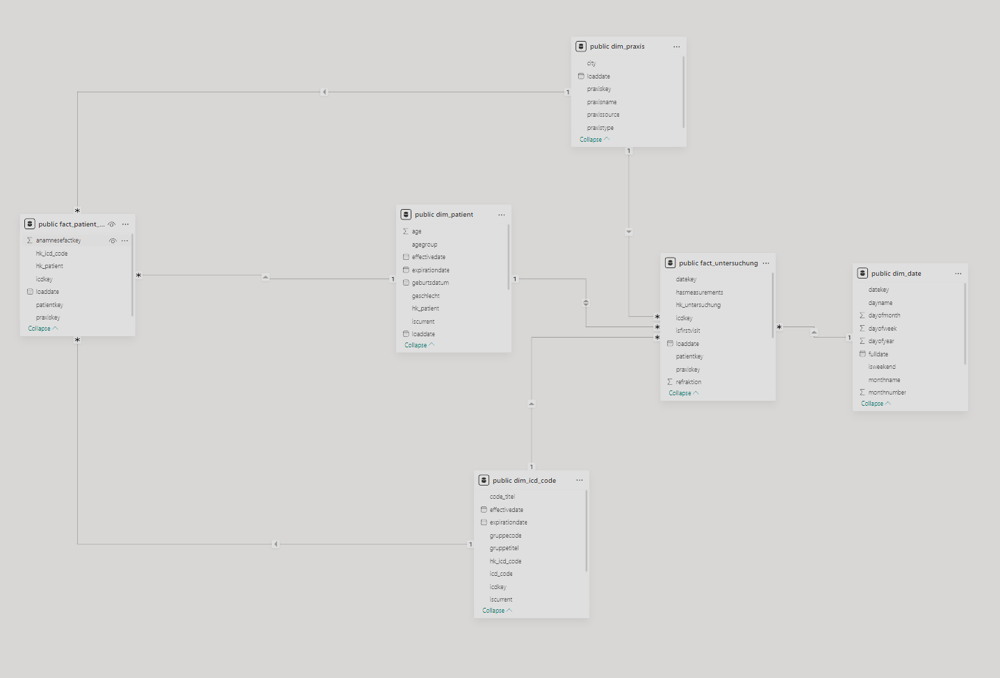
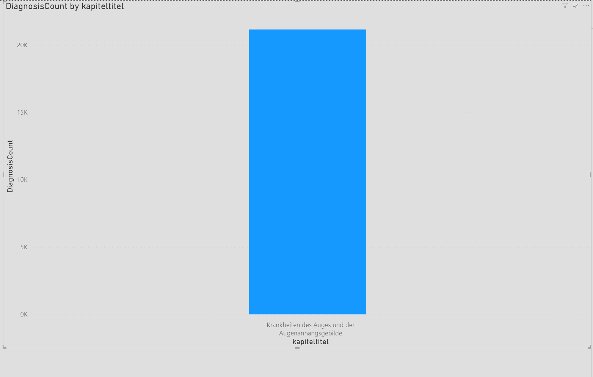
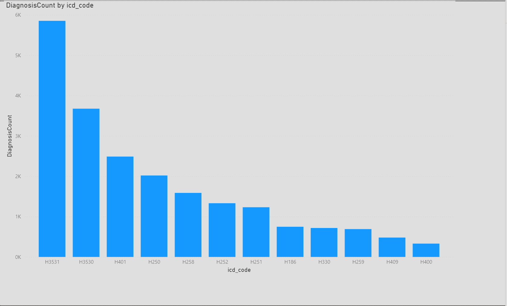
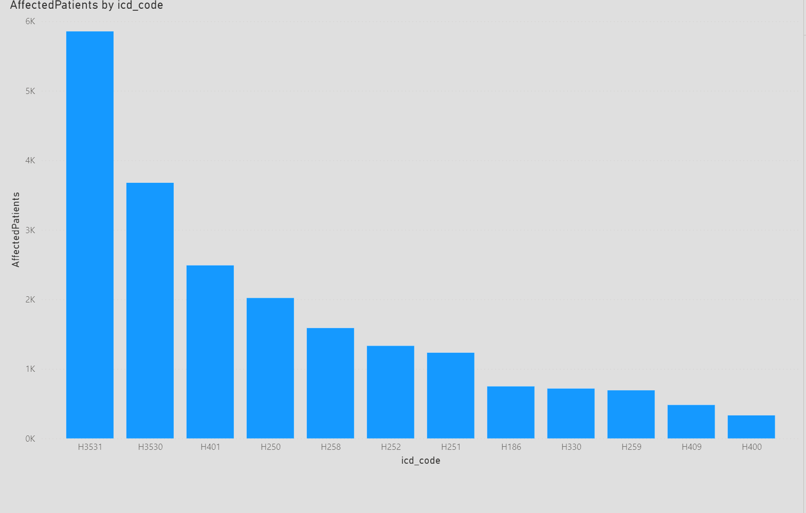
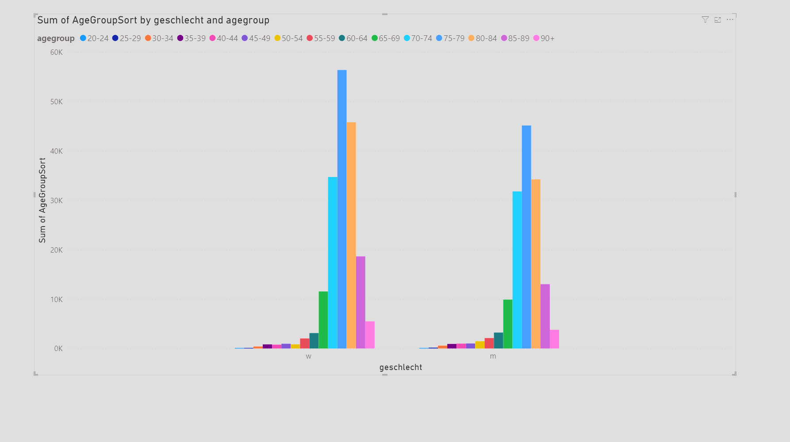

Praktikum 4 - Gruppe 10
Data Vault to Data Mart - ETL Pipeline
This project transforms data from the Data Vault schema (Praktikum 3) into a dimensional model (Star Schema) optimized for analytical queries and business intelligence reporting.
From Data Vault to Star Schema
In Praktikum 3, we built a Data Vault model that preserves data lineage and handles multiple sources. Now we transform this into a dimensional model for better query performance and easier analytics.
Dimensional Model Overview

Our Star Schema consists of:
Dimension Tables
Dim_Date - Time dimension for temporal analysis - DateKey (PK), FullDate, DayOfWeek, DayName - Week, Month, Quarter, Year - IsWeekend flag for working day analysis
Dim_Praxis - Practice/Clinic locations - PraxisKey (PK), PraxisSource, PraxisName - PraxisType (Praxis vs Uniklinik), City - Tracks all 9 Praxis locations + 2 University Clinics
Dim_Patient - Patient master data with SCD Type 2 - PatientKey (PK), HK_Patient, PatientID, PatientSource - Demographic data: Name, Birth date, Gender, Insurance - AgeGroup: 5-year blocks (0-4, 5-9, 10-14, ..., 85-89, 90+) - EffectiveDate, ExpirationDate, IsCurrent for slowly changing dimensions
Dim_ICD_Code - Denormalized ICD hierarchy - ICDKey (PK), HK_ICD_Code, ICD_Code, Code_Titel - Hierarchy: Kapitel → Gruppe → Code (flattened) - EffectiveDate, IsCurrent for version tracking
Fact Tables
Fact_Untersuchung - Examination facts (grain: one examination) - Links to: Patient, ICD Code, Date, Praxis - Measurements: Tensio, Refraktion, Visus - IsFirstVisit: Flag for first-time patient visits (Aufgabe 2c) - HasMeasurements: Flag indicating if any measurements were taken
Fact_Patient_Anamnese - Medical history facts (grain: patient-diagnosis pair) - Links to: Patient, ICD Code, Praxis - Tracks pre-existing conditions from medical history - No date dimension (anamnese data has no timestamps)
ETL Pipeline
Step 1: Populate Dim_Date
Generate date records for the range 2015-2030 with all temporal attributes (day, week, month, quarter, year).
Step 2: Populate Dim_Praxis
Extract unique practice/clinic sources from Hub_Patient.PatientSource:
- Parse source name to extract city and type
- Distinguish between Praxis and Uniklinik
- Create readable names: "Praxis Coesfeld", "Universitätsklinikum Münster"
Step 3: Populate Dim_ICD_Code
Denormalize the ICD hierarchy from Data Vault:
Hub_ICD_Kapitel → Link_Kapitel_Gruppe → Hub_ICD_Gruppe
→ Link_Gruppe_Code → Hub_ICD_Code
Result: Single row with Kapitel, Gruppe, and Code information (flattened)
Step 4: Populate Dim_Patient
Transform patient data with age calculations:
- Get latest Sat_Patient_Stammdaten for each patient
- Calculate AgeGroup in 5-year blocks using birth date
- Calculate actual Age for detailed analysis
- Mark as IsCurrent = TRUE (SCD Type 2 ready)
Step 5: Populate Fact_Untersuchung
Load examination facts with measurements:
- Join Hub_Untersuchung → Link_Patient_Untersuchung → Hub_Patient
- Get latest Sat_Untersuchung (date) and Sat_Messwerte (measurements)
- Link to dimensions via foreign keys
- Calculate IsFirstVisit by comparing with earliest examination date
- Join to first diagnosis via Link_Untersuchung_Diagnose
Step 6: Populate Fact_Patient_Anamnese
Load medical history facts:
- Extract from Link_Patient_Anamnese
- Link to Patient, ICD Code, and Praxis dimensions
- Represents pre-existing conditions separate from examination diagnoses
Analytical Views
Pre-built views for common analytics:
vw_First_Visit_Only- First examinations only (Aufgabe 2c)vw_Patient_Examination_Summary- Complete patient examination detailsvw_Measurements_By_AgeGroup- Average measurements grouped by agevw_Anamnese_Diagnose_Correlation- Medical history vs diagnosis patternsvw_Versicherung_Distribution- Insurance distribution by practice type
Power BI Analytics
Diagnosis Count by ICD Kapitel

Shows the distribution of diagnoses across ICD chapters. Most common categories are eye-related conditions (Kapitel VII - Krankheiten des Auges).
Diagnosis Count by ICD Code

Detailed breakdown of top diagnoses at the code level, showing which specific conditions are most prevalent.
Affected Patients Analysis

Shows number of unique patients affected by each diagnosis, useful for understanding disease prevalence vs frequency.
Age Group Distribution

Patient distribution across 5-year age groups, revealing demographic patterns in the patient population.
Power BI DAX Measures
Key calculated measures for Power BI:
DiagnosisCount =
CALCULATE(
COUNT('public fact_untersuchung'[UntersuchungFactKey]),
NOT(ISBLANK('public fact_untersuchung'[ICDKey])),
'public dim_icd_code'[IsCurrent] = TRUE
)
AffectedPatients =
CALCULATE(
DISTINCTCOUNT('public fact_untersuchung'[PatientKey]),
NOT(ISBLANK('public fact_untersuchung'[ICDKey])),
'public dim_icd_code'[IsCurrent] = TRUE
)
These measures filter for: - Valid diagnoses (ICDKey is not blank) - Current ICD code versions only - Count examinations vs unique patients